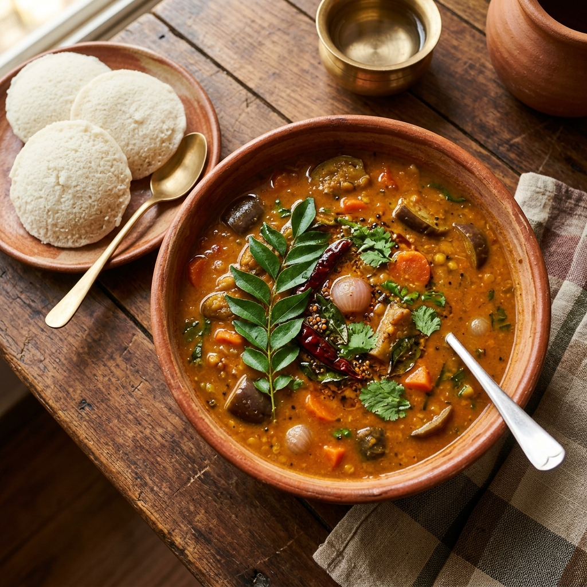

South Indian
Sambar Recipe (Serves 2–3)
A comforting, quick homestyle Sambar. Perfect for smaller families and quick weeknight meals, bringing authentic South Indian taste to your table.
Prep Time
10 mins
Cook Time
25 mins
Total Time
35 mins
Servings
2-3
Instructions
- Cook the dal: Add toor dal, garlic, turmeric powder, and 1½ cups water to a pressure cooker. Cook for 4 whistles, then let the pressure release naturally. Mash the dal until smooth.
- Prepare the tempering: Heat oil in a pot over medium heat. Add mustard seeds and let them splutter. Then add the fenugreek seeds, cumin seeds, asafoetida, and curry leaves. Sauté for a few seconds.
- Cook the vegetables: Add the sliced onion and green chilli. Sauté until the onion turns soft. Add the chopped tomato and cook until it becomes mushy. Stir in the chopped brinjal, sambar powder, and salt.
- Simmer: Pour in 1½ cups water, mix well, and cook for 10 minutes or until the brinjal is tender.
- Finish the sambar: Add the tamarind extract and the mashed dal. Mix well and simmer for 5–7 minutes, allowing the flavors to blend. Adjust the consistency with a little extra water if needed.
- Garnish & serve: Turn off the heat and garnish with fresh coriander leaves. Serve hot with steamed rice, idli, dosa, or vada.